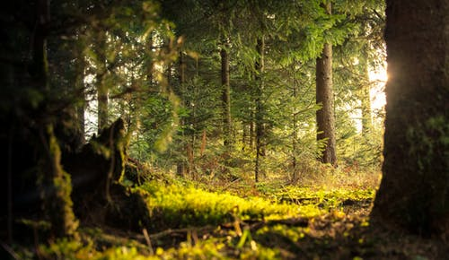

The Appolonia Bio-gas

- Location: Appolonia
- No. of visits: 5 million per year
The biogas in Appolonia was built by the Government of Ghana with funding from the Danish government in the year 1959 under the first Present of Ghana, Ex. Dr. Kwame Nkrumah. The biogas serves the entire community and its surroundings with electricity and also gas (fuel) for cooking and other purpose. It located on the main Appolonia - Afienya road opposite Assemblies of God, Church.
Click here to read moreAppolonia City of Light

Appolonia City creates a seamless live-work-play satellite city complete with residential, retail, commercial, educational, healthcare and recreational facilities. Upon completion, Appolonia City will have the following: 25,000 housing units (100,000 residents) 20,000 day visitors A 200-acre light industrial park A 120-acre central business district Over 300 acres of public parks and gardens
Click here to read moreThe Appolonia Bio-gas 
- Location: Appolonia
- No. of visits: 7 million per year
The biogas in Appolonia was built by the Government of Ghana with funding from the Danish government in the year 1959 under the first Present of Ghana, Ex. Dr. Kwame Nkrumah. The biogas serves the entire community and its surroundings with electricity and also gas (fuel) for cooking and other purpose. It located on the main Appolonia - Afienya road opposite Assemblies of God, Church.
Click here to read more